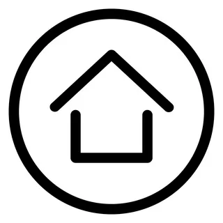
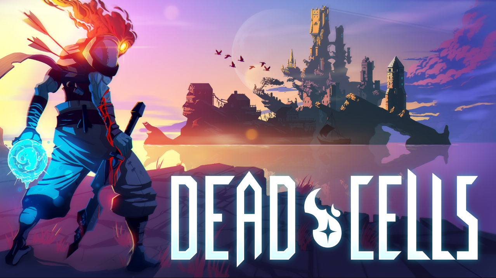
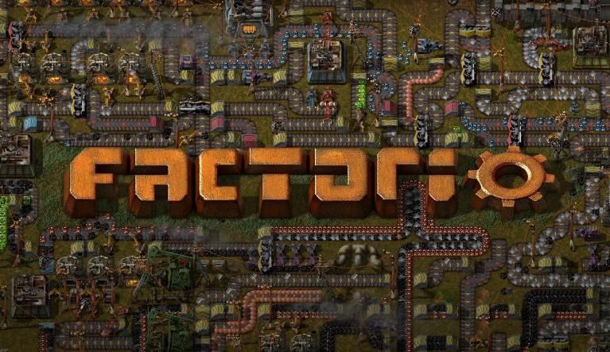
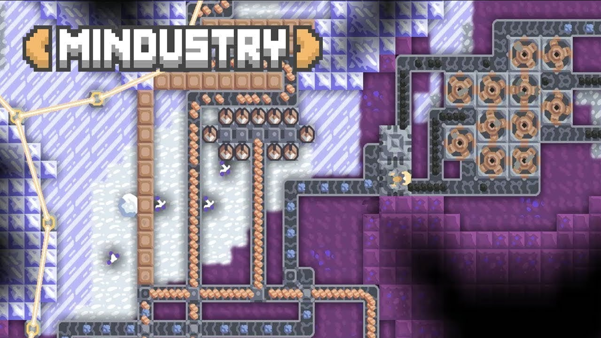
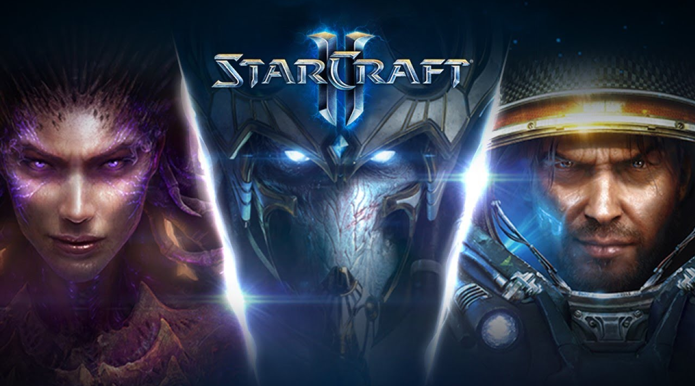
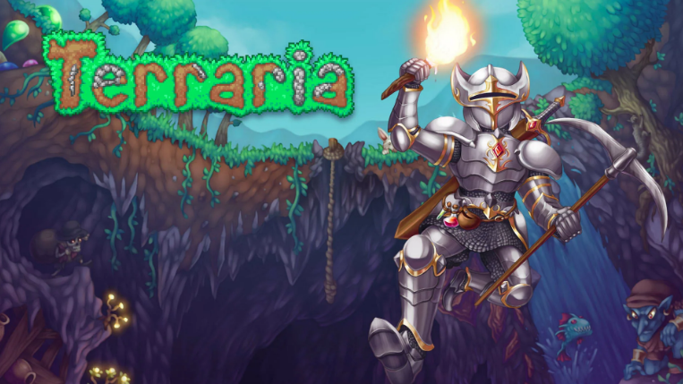
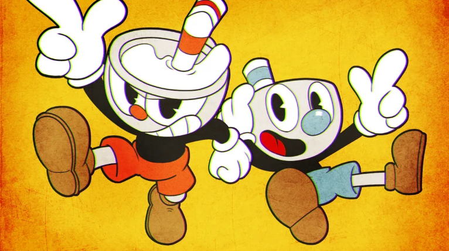

видеоигры

почти всю жизнь у меня не было компьютера,
поэтому занимался мобильным геймингом
и попробовал множество мобильных игр.
к сожалению, большинство из них просто невозможно сравнивать

с играми для пк, ведь вторые в разы лучше,
и вот мой небольшой списочек игр которые я прошел
после того как приобрел компьютер
список

